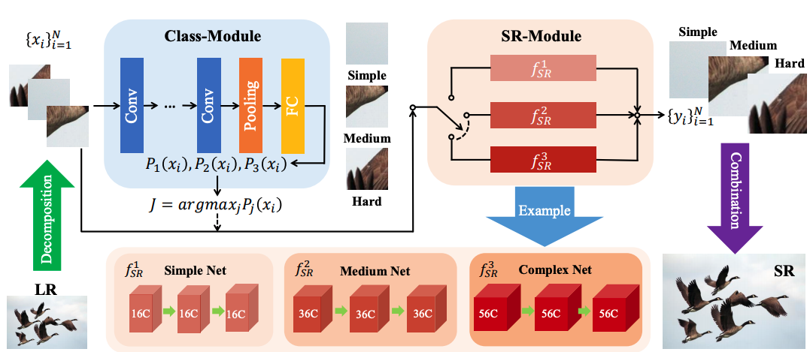
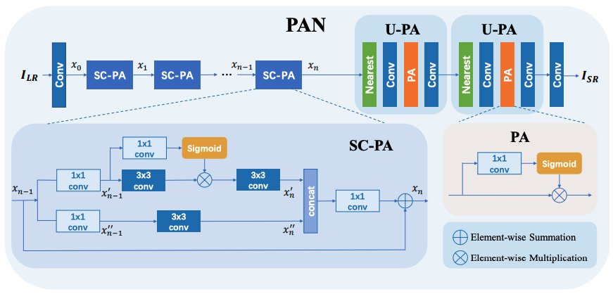

Henguan Zhao (赵恒远)
Research Assistant at Shenzhen Institutes of Advanced Technology (SIAT)
Email: zhaohengyuan99@gmail.com
Live in Shenzhen, China
Experience
2020/12-now: I join the Vision Technology (VIS), Baidu Inc. as a research intern and work with
Wenhao Wu.
2019/09-now: I am a research assistant at SIAT and supervised by Prof.
Chao Dong.
2016/09-2020/06: I was a undergraduate student at Nanjing University of Posts and Telecommunications, Nanjing, China.
News
- [03/2021] One paper accepted by CVPR, 2021.
- [12/2020] Join VIS, Baidu, mentored by Wenhao WU.
- [08/2020] One paper accepted by ECCV Workshop, 2020.
- [05/2020] Participate the Efficient Super-Resoluton Challenge of AIM 2020 (ECCV Workshop). We got fouth places () and lowest parameters.
- [09/2019] Join MMLAB at SIAT, supervised by Yu Qiao and Chao Dong.
- [08/2019] One paper accepted by ICCV Workshop, 2019.
Publications
|  |
ClassSR: A General Framework to Accelerate Super-Resolution Networks by Data Characteristic
Computer Vision and Pattern Recognition (CVPR), 2021
|
 |
Very Lightweight Photo Retouching Network with Conditional Sequential Modulation |
|  |
Efficient Image Super-Resolution Using Pixel Attention
European Conference on Computer Vision Workshops (ECCVW), 2020
|